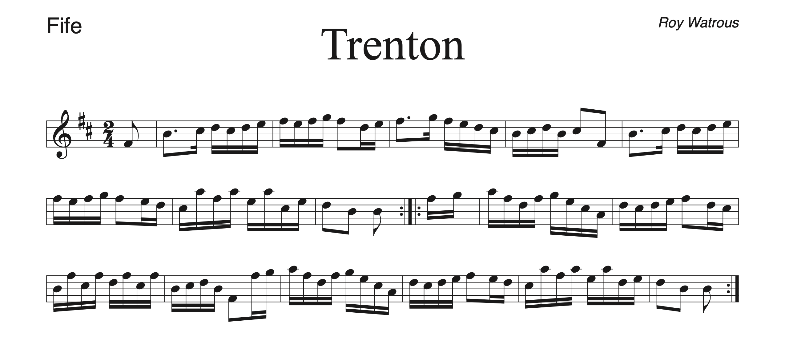

Note: This tune was in Culloden Moor, so many/most WDJ members may be familiar with it.

Note: This song has a beautiful (in my opinion) 3-4 part harmony, which I put below.


Note: This song is very challenging (but a lot of fun in my opinion). Newer fifers would not be able to play this song, but if needed, I can try to cook up a harmony that is more accessible to our newer members.

Note: This song would be pretty tough, especially for our newer fifers (not impossible though, I think). Also, this recording is not how the tune is usually played, especially for the C part. Trust the sheet music, not the recording.

Note: Sorry about the bad recording
Note: This recording is not exactly how I would recommend we play it (though it's still pretty close). The rhythm is usually a little different.


Note: This is technically two separate songs, but they are just about always played together as a medley.


Note: This song would be rather challenging for the new fifers, but it's a lot of fun in my opinion.

Note: MCV plays an amazing arrangement of Eel Pot Tavern. Unfortunately, since it's MCV, this arrangement is in some crazy key of H# or whatever. I put a transposed recording of their arrangement below. If we vote for it, I could, with a little effort, procure a copy of their sheet music. The sheet music below is a different arrangement, but the melody line is almost the same.

Note: This song would be tough on the new fifers.

This tune would also be tough on the newer fifers, but it can be made more accessible by omitting pedal tones. Also there is a harmony I can dig up that sounds good and is not as challenging.

Note: This song would be a little tough on the new fifers. Also, sorry about the terrible quality of the recording.

Note: This song is very challenging (but a lot of fun in my opinion). Newer fifers would not be able to play this song, but if needed, I might be able to cook up a harmony that is more accessible to our newer members.